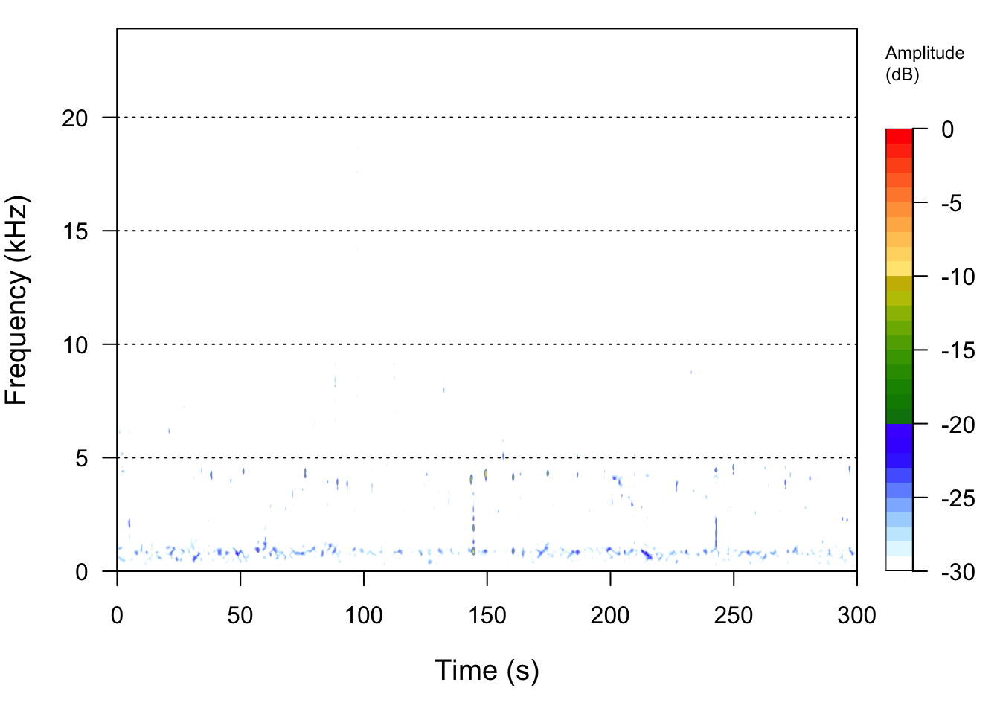

Acoustic ecology - studying environments through sound
1 Overview
Please start by logging into rstudio.pomona.edu. In this tutorial, we’ll take a look at sound data collected at the Bernard Field Station.
In this tutorial, you will learn:
- what are different ways to interact with sound data in
R? - how can we visualize sound data using spectrograms?
- how can we calculate indices of acoustic diversity?
By the end of this lab, you should have:
- gained some familiarity with pulling in acoustic data
(
.WAVfiles) intoR; - interacted with the class bioacoustic dataset;
- started to identify hypotheses that you would like to test in your groups.
2 A brief description of sound
When we vocalize, we are making vibrations that move through the air like a wave. Microphones detect these vibrations. These vibrations are then recorded into numbers which can be processed by computers. It turns out that we can get quite a bit of information from these numbers.
These packages are not yet installed on the RStudio Server, so we will need to install them. Please run this once this semester in the console:
install.packages(c("seewave","tuneR"))Let’s start by loading the packages that we will need.
### Loading packages
library(seewave)
library(tuneR)
library(dplyr)
library(readr)2.1 Waveforms
Let’s pull in one of the recorded files from the BFS. You can play the recording below.
Now, let’s visualize this recording using an oscillogram. The output
from the function oscillo shows how how the amplitude (or
loudness) changes over the whole recording. We’re going to focus on
visualizing the recording from 0:00 to 0:05.
Please navigate to this Github
link to download the 20220313_063000.WAV file. Then
upload this file to your RStudio Server workspace in the home
directory.
## Read in the sound data
BFS_am_1 <-tuneR::readWave('20220313_063000.WAV')
## Show the oscillogram
## which is a plot of amplitude over time
oscillo(BFS_am_1, from=0, to= 5, fastdisp=TRUE)
One thing to note is that these data were recorded at a frequency of 48,000 records per second. So even though each sound file is only 30 seconds long, it has a total of 1,440,000 data points! (This is equal to 30 seconds / minute * 48000 records/second.)
2.2 Spectrogram
Another way that we can visualize sound is to use the fact that sound has the property of frequency (pitch) at particular times. We can also include amplitude (loudness) as a color. A spectrogram let’s us display all three elements of an acoustic signal: its time/duration, the frequency (pitch) of the sound, and the loudness of the sound at each frequency (pitch).
We see that the frequencies in this sound recording are mostly located from 0 to 5000 Hz (or 5 kHz).
## Use spectro to display the spectogram of this data
spectro(BFS_am_1, fastdisp=TRUE)
# NB: you may need to make the plotting window larger3 Soundscape indices
From observational data of species, we can calculate metrics such as species richness, Shannon’s index, etc. Similarly, from sound data, we can calculate metrics of acoustic complexity, which theoretically should be related to the overall biodiversity of vocalizing animals.
First, let’s now also read in an evening recording. Please navigate
to this Github
link to download the 20221020_191500.WAV file. Then
upload this file to your RStudio Server workspace in the home
directory.
## Read in the sound data for the evening
BFS_pm_1 <-tuneR::readWave('20221020_191500.WAV')If the command above doesn’t work
BFS_pm_1 <-tuneR::readWave('20221020_191500.WAV'), then
run getwd() to see which “working directory” (or folder)
you are located in. If you do not see some variant of
/home/username then you can either:
- Move the recording to whichever directory (folder) you see in
getwd() - Change your current directory to whichever directory (folder) you
downloaded the
.WAVfile to.- To swap back to the home directory, simply run
setwd("~"). - (This assumes that you downloaded the WAV files to the home
directory
/home/usernamewhereusernameis likely something likecesa2025).
- To swap back to the home directory, simply run
Here, we will use the function ACI to calculate the
acoustic complexity of a morning versus evening recording from the
BFS.
ACI(BFS_am_1)## [1] 155.0816ACI(BFS_pm_1)## [1] 167.04154 Processed data
In addition to using numeric metrics such as ACI to
calculate the acoustic diversity of audio recordings, we can use new
computer vision models to identify (bird) species in the recordings. We
have and will process/ed the raw recording data to:
- Calculate ACI for each 30 second recording - to be done for the class recordings
- Identify bird vocalizations in each 30 second recording - to be done for the class recordings
We have used Cornell Lab of Ornithology’s BirdNET neural network model,
which is trained on data such as identified acoustic recordings from xeno-canto. This model extracts
distinct bird vocalizations from the spectrographic representation of
each sound file. Those bird vocalizations are then pattern matched
against known bird vocalizations to generate the most likely species (of
the 3000 species supported by the model) with some probability (a.k.a.
confidence).
Let’s take a look at the data.
# Read in a spreadsheet from a URL using read_tsv from the readr package
soundDF <- readr::read_tsv("https://github.com/chchang47/BIOL104PO/raw/refs/heads/master/data/bioacousticAY22-23.tsv") # read in spreadsheet from its URL and store in soundDF## Rows: 151468 Columns: 8
## ── Column specification ────────────────────────────────────────────────────────
## Delimiter: "\t"
## chr (5): unit, time, DayNight, Month, season
## dbl (2): ACI, SR
## date (1): date
##
## ℹ Use `spec()` to retrieve the full column specification for this data.
## ℹ Specify the column types or set `show_col_types = FALSE` to quiet this message.# Inspect the data
soundDF %>% head() # look at the first 6 rows## # A tibble: 6 × 8
## unit date time ACI SR DayNight Month season
## <chr> <date> <chr> <dbl> <dbl> <chr> <chr> <chr>
## 1 CBio4 2023-03-23 18H 0M 0S 155. 3 Night March Spring
## 2 CBio4 2023-03-23 18H 1M 0S 154. 3 Night March Spring
## 3 CBio4 2023-03-23 18H 2M 0S 151. 7 Night March Spring
## 4 CBio4 2023-03-23 18H 3M 0S 155. 3 Night March Spring
## 5 CBio4 2023-03-23 18H 4M 0S 152. 2 Night March Spring
## 6 CBio4 2023-03-23 18H 5M 0S 152. 4 Night March SpringWhat are the different variables in the data? We see that there are the following columns:
unit: Which AudioMoth collected the recordings- Note that each AudioMoth had a particular location, so your group may use that attribute in your analyses. I’ll show you how to do that below.
date: The date of the recordingtime: The time of the recordingACI: The Acoustic Complexity Index of the recording- In a nutshell, ACI values typically increase with more diversity of sounds.
- The calculation for ACI introduced by Pieretti et al. (2011) is based on the following observations: 1) biological sounds (like bird song) tend to show fluctuations of intensities while 2) anthropogenic sounds (like cars passing or planes flying) tend to present a very constant droning sound at a less varying intensity.
- One potential confounding factor is the role of geophony, or environmental sounds like rainfall. Sometimes geophony like a low, constant wind can present at a very constant intensity, and therefore would not influence ACI. However, patterns that have high variation could influence ACI because they may have varying intensities.
SR: The species richness in every 30 second recordingDayNight: Whether the recording occurred in the day or at nightMonth: A variable that notes which month is associated with the recording.season: A variable that notes if the recording was made in the spring or fall.
How can I see an overview of the data?
str(soundDF) # see the data structure
View(soundDF) # open up a spreadsheet viewer to see the dataLet’s make sure that the data are in the correct format.
# Cleaning up the data
soundDF <- soundDF %>%
mutate(date = lubridate::ymd(date), # datetime format for date column
time = lubridate::hms(time), # HH:MM:SS time format for time column
Month = forcats::fct_relevel(Month,
c("January", "February", "March", "April", "May", "June",
"July", "August", "September", "October", "November", "December")) # ensure that month is ordered appropriately
)## Warning: There was 1 warning in `mutate()`.
## ℹ In argument: `Month = forcats::fct_relevel(...)`.
## Caused by warning:
## ! 8 unknown levels in `f`: January, February, May, June, July, August, September,
## and DecemberHow can I view the levels for different covariates of interest?
soundDF %>% dplyr::select(DayNight) %>% # select the DayNight column from soundDF
unique() # get the unique values## # A tibble: 2 × 1
## DayNight
## <chr>
## 1 Night
## 2 Day# How would I do this for month?Each of your groups is required to submit 3 hypotheses by the end of
Week 2 of this lab (Week 7/8 of class). Please confer with your groups
on possible hypotheses that you can explore with these data. Some
additional variables beyond the bird identification or ACI
variables that we can obtain as a class include:
- Precipitation
- Temperature
- Time of year (
date) - BirdCast migration estimates for Los Angeles County (see the Birds in flight (nightly avg.) plot FMI)
- Habitat type in the BFS (determined by the
unit’s location) - Distance to road or edge of the BFS (determined by the
unit’s location) - … other variables that you may think of and are feasible for us to collect!
To that end, you might wonder–how can I start to look at different patterns in the data?
# Examining and describing the number of species during the day or night
soundDF %>%
group_by(DayNight) %>% # group by the Day or Night categories
summarize(meanSpecies = mean(SR)) # average species richness## # A tibble: 2 × 2
## DayNight meanSpecies
## <chr> <dbl>
## 1 Day 3.45
## 2 Night 1.59 # How would you build on this to look at other variables of interest?5 R
script
Below is the R script in its entirety.
### Loading packages
library(seewave)
library(tuneR)
library(dplyr)
library(readr)
## Read in the sound data
BFS_am_1 <-tuneR::readWave('20220313_063000.WAV')
## Show the oscillogram
## which is a plot of amplitude over time
oscillo(BFS_am_1, from=0, to= 5, fastdisp=TRUE)
## Use spectro to display the spectogram of this data
spectro(BFS_am_1, fastdisp=TRUE)
# NB: you may need to make the plotting window larger
## Read in the sound data for the evening
BFS_pm_1 <-tuneR::readWave('20221020_191500.WAV')
### ACI - acoustic complexity index calculations
ACI(BFS_am_1)
ACI(BFS_pm_1)
# Read in a spreadsheet from a URL using read_tsv from the readr package
soundDF <- readr::read_tsv("https://raw.githubusercontent.com/chchang47/BIOL104PO/refs/heads/master/data/bioacousticAY22-23.tsv") # read in spreadsheet from its URL and store in soundDF
# Inspect the data
soundDF %>% head() # look at the first 6 rows
str(soundDF) # see the data structure
View(soundDF) # open up a spreadsheet viewer to see the data
# Cleaning up the data
soundDF <- soundDF %>%
mutate(date = lubridate::ymd(date), # datetime format for date column
time = lubridate::hms(time), # HH:MM:SS time format for time column
Month = forcats::fct_relevel(Month,
c("January", "February", "March", "April", "May", "June",
"July", "August", "September", "October", "November", "December")) # ensure that month is ordered appropriately
)
# View attributes in the data
soundDF %>% dplyr::select(DayNight) %>% # select the DayNight column from soundDF
unique() # get the unique values
# How would I do this for month?
# Examining and describing the number of species during the day or night
soundDF %>%
group_by(DayNight) %>% # group by the Day or Night categories
summarize(meanSpecies = mean(SR)) # average species richness
# How would you build on this to look at other variables of interest?